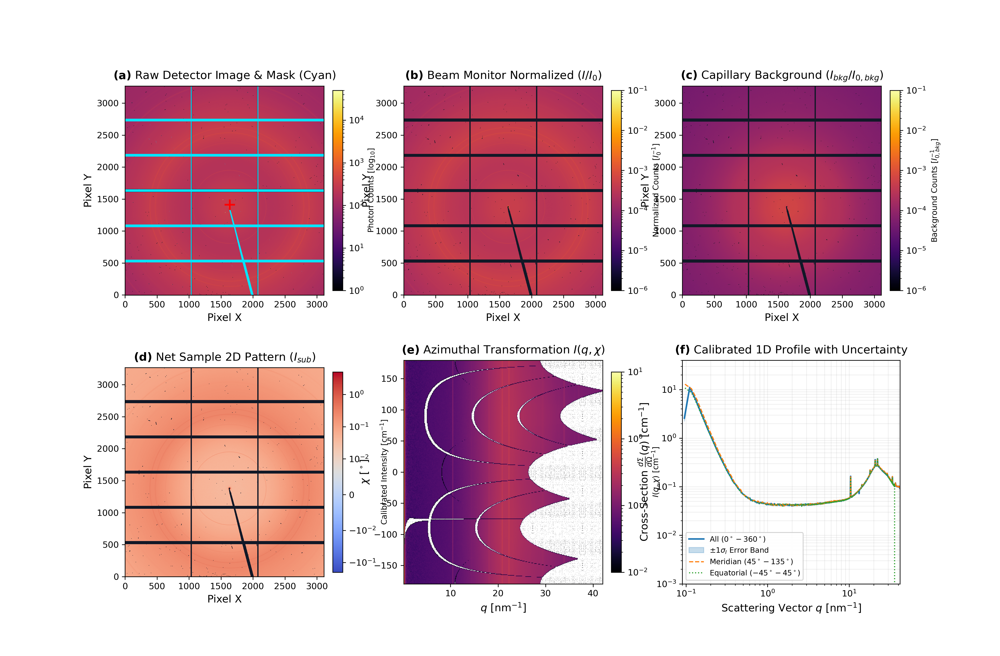
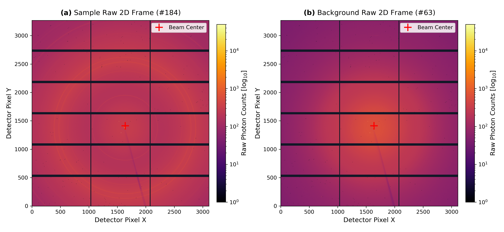
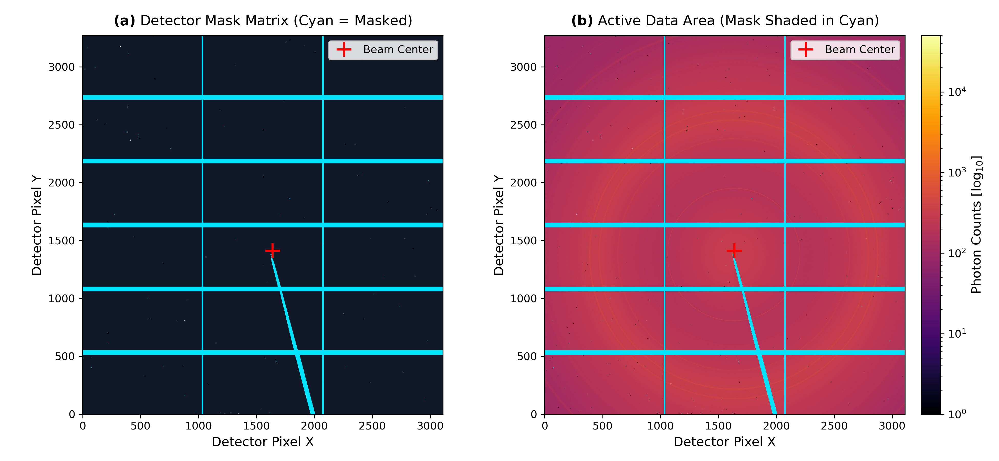
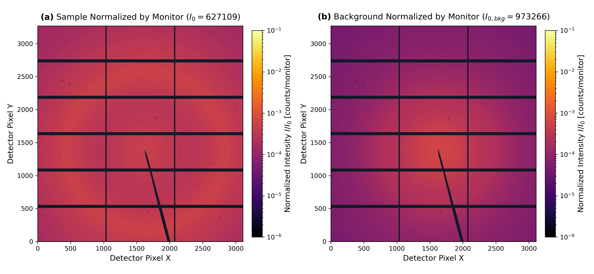
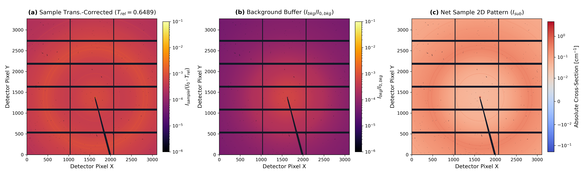
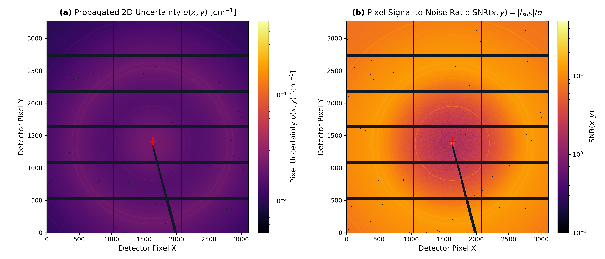
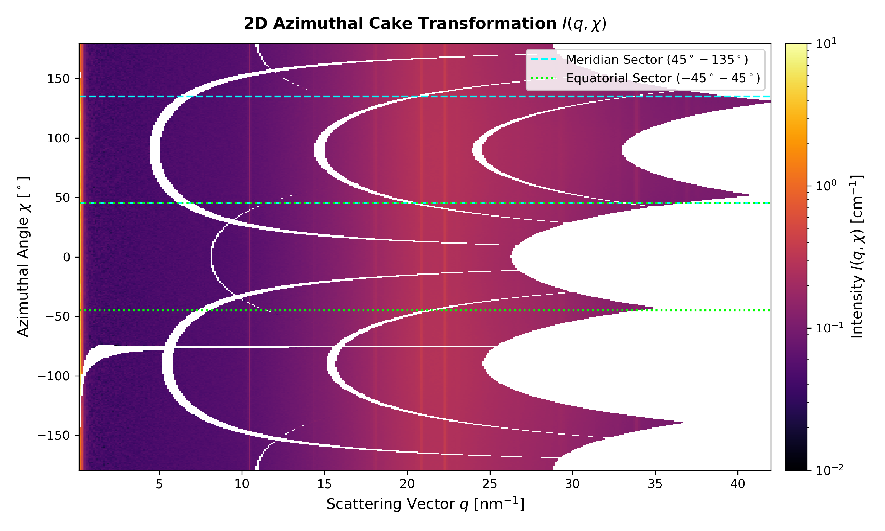
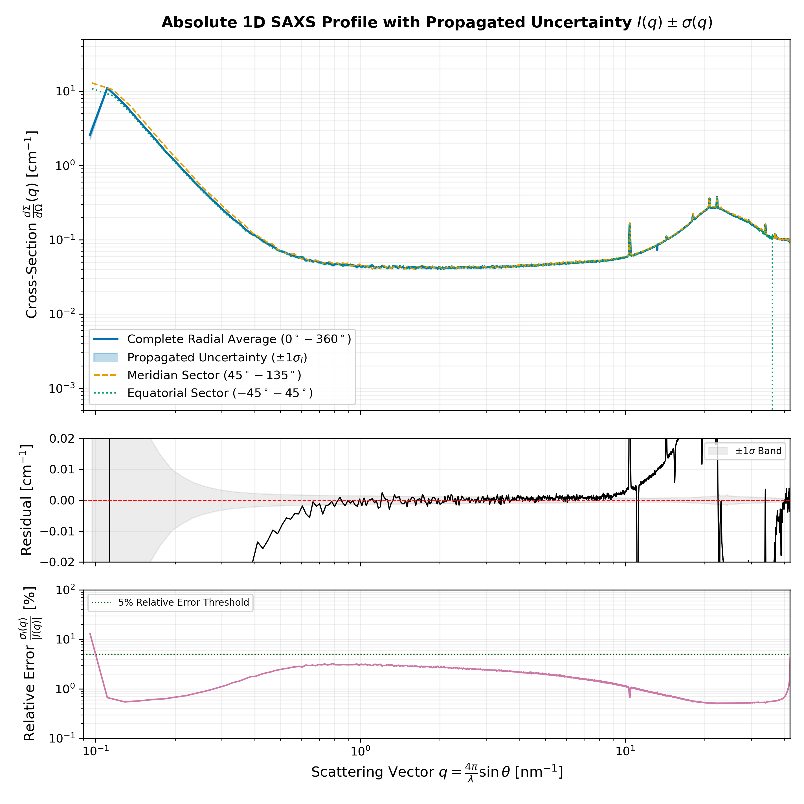

Small-angle X-ray scattering data reduction report
Documentation of the data reduction protocol implemented in Spiger 2.0, covering single-frame reduction for Scan #184 and file index for the in-situ kinetic series across Scans #184 to #292.
Overview and publication figure

Figure 0 | Overview of data reduction protocol. (a) Raw 2D Eiger 9M detector frame showing module gaps and beamstop with the composite mask overlay in cyan. (b) Sample frame normalized by incoming photon monitor counts ($I / I_0$). (c) Normalized background buffer scattering frame. (d) Net sample 2D scattering pattern after transmission attenuation scaling and background subtraction. (e) 2D azimuthal cake representation $I(q, \chi)$. (f) Calibrated 1D absolute scattering profile $\frac{d\Sigma}{d\Omega}(q)$ in $\text{cm}^{-1}$ across isotropic ($0-360^\circ$), meridian ($45-135^\circ$), and equatorial ($-45-45^\circ$) sectors.
Step 1: Raw 2D photon count acquisition
The experiment utilizes a Dectris Eiger 9M single-photon counting detector ($3269 \times 3110$ pixels) operating with zero readout noise. Data frames are acquired in HDF5 format with bitshuffle/lz4 compression.

Figure 1 | Raw 2D scattering frames. (a) Sample in-situ flow capillary measurement (#184, frame 1) acquired for $t_{exp} = 10\text{ s}$. (b) Pure capillary buffer background reference (#63, frame 1) acquired for $t_{exp} = 15\text{ s}$. Red crosses mark the direct beam center coordinates $(x = 1638.1, y = 1412.1\text{ pix})$.
Step 2: Detector masking and active area isolation
To prevent integration artifacts and pane boundary lines, inactive and defective pixels (inter-module tile boundaries with 2-pixel dilation, beamstop shadows, dead pixels, and hot pixel spikes) are masked in Start_rigorous_mask.tiff.

Figure 2 | Detector mask geometry. (a) Binary mask $M(x, y)$ combining dilated module pane gaps, perimeter margin, dead pixels, hot pixels, and beamstop arm (cyan = masked). (b) Detector data area with mask shown in cyan ($787,976$ pixels excluded, corresponding to $7.75\%$ of the sensor area).
Step 3: Beam flux and monitor normalization
Because synchrotron ring current and monochromator alignment decay over time, absolute intensity comparisons require dividing raw photon counts by the upstream ionization chamber monitor (IoniCh).

Figure 3 | Monitor-normalized intensity maps. (a) Sample frame normalized by $I_{0,sample} = 627,109\text{ monitor counts}$. (b) Background buffer frame normalized by $I_{0,bkg} = 973,266\text{ monitor counts}$. Both frames are displayed on identical quantitative scales ($10^{-6}$ to $10^{-1}\text{ counts/monitor}$).
Step 4: Transmission correction and background subtraction
When measuring solutions inside glass capillaries, the sample attenuates the incident beam, decreasing the transmitted background contribution. The relative transmission $T_{rel}$ is calculated directly from the transmitted XRF peak (roi3):

Figure 4 | Transmission scaling and background cancellation. (a) Attenuation-corrected sample frame: $\frac{I_{sample}}{I_0 \cdot T_{rel}}$. (b) Pure capillary buffer background: $\frac{I_{bkg}}{I_{0,bkg}}$. (c) Resulting 2D net sample scattering pattern $I_{sub}(x, y)$ plotted on a symmetric logarithmic scale, showing complete cancellation of parasitic capillary scatter.
Step 4b: Analytical error propagation and 2D signal-to-noise mapping
Quantification of experimental uncertainties is used for SAXS modeling, Guinier fits, and Porod invariant calculations. The pipeline implements the analytical error propagation defined in Spiger (integrator20.py), calculating seven independent variance components for each pixel $(x, y)$:

Figure 4b | 2D spatial uncertainty propagation and pixel-level SNR. (a) Propagated 2D uncertainty $\sigma(x, y)$ in absolute units $[\mathrm{cm}^{-1}]$ across the active detector area. Uncertainty is highest near the beam center where incident flux and background scatter are concentrated, dropping toward high scattering angles. (b) 2D pixel signal-to-noise ratio $\mathrm{SNR}(x, y) = |I_{sub}(x, y)| / \sigma(x, y)$. The central SAXS core achieves high statistical significance ($\mathrm{SNR} > 20$), while the wide-angle diffuse background operates at photon-limited thresholds ($\mathrm{SNR} \sim 1 - 3$).
Experimental error budget summary
| Uncertainty source | Measured value / assumption | Fractional std dev (σ / μ) | Primary impact regime |
|---|---|---|---|
| Sample photon counting | Poisson (σ = √Isam) | 1/√Isam (0.5% - 25%) | High-q diffuse scattering, single pixels |
| Capillary background counting | Poisson (σ = √Ibkg) | 1/√Ibkg (0.8% - 30%) | Mid-to-high-q buffer subtraction baseline |
| Relative transmission Trel | 0.64890 ± 0.00199 | ≈ 0.31% | Low-q scaling and buffer cancellation level |
| Ion chamber monitors (I0) | I0,sam=627109, I0,bkg=973266 | 2.00% | Global scale factor between scans |
| Absolute calibration Kstd | 385.200 ± 1.376 cm-1 | 0.36% | Overall absolute scale (cm-1) systematic error |
Step 5: 2D polar cake transformation
Using the detector calibration (calib.poni), Cartesian coordinates $(x, y)$ are re-mapped into reciprocal polar coordinates: scattering vector magnitude $q$ and azimuthal angle $\chi$.

Figure 5 | 2D azimuthal cake transformation $I(q, \chi)$. The transformation unwraps concentric diffraction rings into vertical lines. Dashed lines illustrate sector integration partitions: Meridian ($45^\circ$ to $135^\circ$, cyan) and Equatorial ($-45^\circ$ to $45^\circ$, lime).
Step 6: Absolute 1D integration with propagated uncertainties
Radial averaging across 2,150 $q$-bins from $q_{min} = 0.095\text{ nm}^{-1}$ to $q_{max} = 42.06\text{ nm}^{-1}$ yields the differential scattering cross-section $\frac{d\Sigma}{d\Omega}(q)$ in absolute units ($\text{cm}^{-1}$) with propagated 1D standard error $\sigma_I(q)$.

Figure 6 | Calibrated 1D SAXS profiles with uncertainty propagation. Top: 1D radial profiles for full isotropic integration ($0-360^\circ$, blue) with shaded $\pm 1\sigma_I$ uncertainty ribbon, meridian sector ($45-135^\circ$, orange dashed), and equatorial sector ($-45-45^\circ$, green dotted). Middle: Residual difference against Spiger benchmark Iq_000166 (black curve) bounded within the shaded $\pm 1\sigma$ uncertainty envelope (mean residual $< 0.02\text{ cm}^{-1}$). Bottom: Relative percentage uncertainty $\frac{\sigma_I(q)}{|I(q)|} \times 100\%$ (purple curve). Across the primary SAXS regime ($0.15 \le q \le 30\text{ nm}^{-1}$), relative errors remain below the 5% threshold line (green dotted).
Point 7: Kinetic series data files
The in-situ flow-through series across Scans #184 to #292 (3,134 frames, 16.15 hours) is stored in the reduced data hierarchy:
| Dataset path | Format | Scan range | Description |
|---|---|---|---|
| reduced_data/Exp2_1/Diffraction/HDF5/MultiRed_All/MultiRed_All.hdf5 | HDF5 | Scans #184 to #274 | Azimuthal 1D profiles $I(q)$ with uncertainties for Part 1 (0.0 to 11.2 h) |
| reduced_data/Exp2_1/Diffraction/HDF5/MultiRed_Equatorial/MultiRed_Equatorial.hdf5 | HDF5 | Scans #184 to #274 | Equatorial sector 1D profiles ($-45^\circ$ to $+45^\circ$) |
| reduced_data/Exp2_1/Diffraction/HDF5/MultiRed_Meridian/MultiRed_Meridian.hdf5 | HDF5 | Scans #184 to #274 | Meridian sector 1D profiles ($45^\circ$ to $135^\circ$) |
| reduced_data/Exp2_1/Transmission/Txt/Transmission.txt | Plain Text | Scans #184 to #274 | Measured transmission coefficients, diode counts, and $I_0$ monitor readings |
| reduced_data/Exp2_2/Diffraction/HDF5/MultiRed_All/MultiRed_All.hdf5 | HDF5 | Scans #275 to #292 | Azimuthal 1D profiles $I(q)$ with uncertainties for Part 2 (11.2 to 16.15 h) |
| reduced_data/Exp2_2/Diffraction/HDF5/MultiRed_Equatorial/MultiRed_Equatorial.hdf5 | HDF5 | Scans #275 to #292 | Equatorial sector 1D profiles ($-45^\circ$ to $+45^\circ$) |
| reduced_data/Exp2_2/Diffraction/HDF5/MultiRed_Meridian/MultiRed_Meridian.hdf5 | HDF5 | Scans #275 to #292 | Meridian sector 1D profiles ($45^\circ$ to $135^\circ$) |
| reduced_data/Exp2_2/Transmission/Txt/Transmission.txt | Plain Text | Scans #275 to #292 | Measured transmission coefficients, diode counts, and $I_0$ monitor readings |
Point 8: Publication output files
Summary of publication figures and output files generated by the reduction pipeline:
| Output file | Format | Resolution / type | Description |
|---|---|---|---|
| Figure_SAXS_Reduction_Pipeline.png | PNG / PDF | 300 DPI / Vector | Multi-panel figure (Panels A to F) |
| step1_raw_2d_detector.png | PNG / PDF | 300 DPI / Vector | Raw photon counts for sample and background |
| step2_mask_application.png | PNG / PDF | 300 DPI / Vector | Detector mask overlay and active pixel isolation |
| step3_monitor_normalization.png | PNG / PDF | 300 DPI / Vector | Monitor flux normalization ($I / I_0$) |
| step4_background_subtraction_2d.png | PNG / PDF | 300 DPI / Vector | Transmission attenuation correction and 2D subtraction |
| step4b_uncertainty_and_snr_2d.png | PNG / PDF | 300 DPI / Vector | 2D spatial uncertainty map and pixel SNR |
| step5_azimuthal_cake_plot.png | PNG / PDF | 300 DPI / Vector | Polar reciprocal space transformation $I(q, \chi)$ |
| step6_1d_integrated_profiles.png | PNG / PDF | 300 DPI / Vector | Absolute 1D intensity profiles with propagated uncertainties |